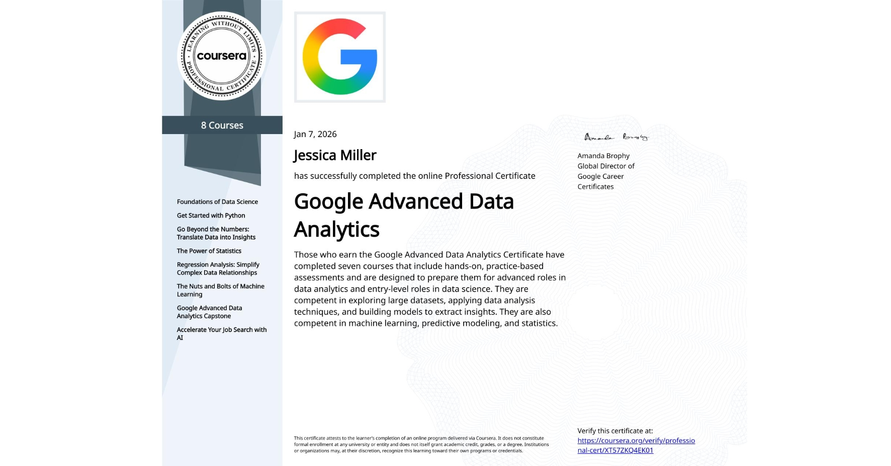
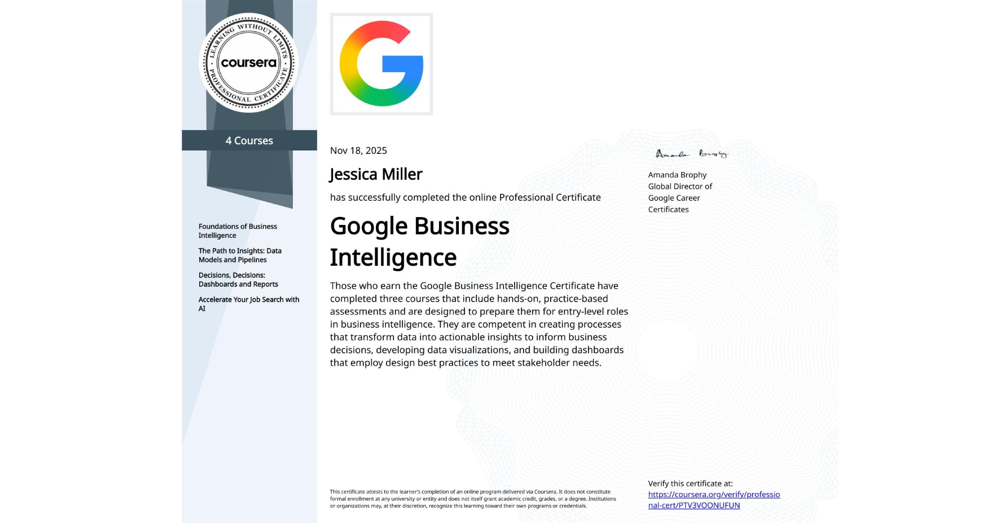
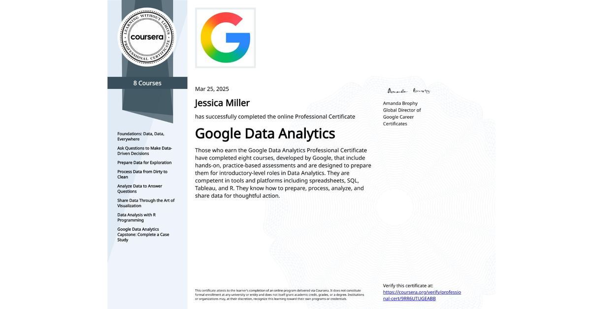
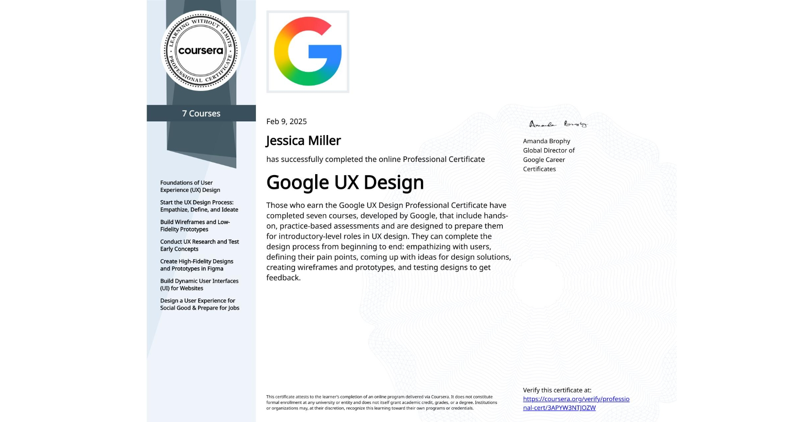

Professional Credentials & Continuing Education
Technical Expertise. Professional Experience. Continuous Development.
I hold 34 course certificates and 4 Google Professional Certificates, 38 certificates in total. Each credential is listed under its official title, with a verification link where one is available.
See my Credly profile. 38 is the certificate count (34 course certificates + 4 Google Professional Certificates), while 39 is the separate Credly verified-skills count.
Most Relevant Now
These are the skills business owners ask for most, and the ones that matter most for keeping a website fast, secure, and easy for visitors to use.
- User experience design. Usability, accessibility, and Figma shape how a website serves its visitors.
- Cybersecurity. Threat awareness, risk management, and network security: a hacked site costs a business its reputation and its customers.
- AI and machine learning. Python and AI-assisted work: this is the foundation of the website agents I build.
- Data and business intelligence. Dashboards, analytics, and data-driven decisions support the analytics and reporting I deliver.
Cybersecurity
I trained in cybersecurity principles and practices, threat awareness, and risk management.
- Connect and Protect: Networks and Network Security, Google, June 2026 · Verify
- Play It Safe: Manage Security Risks, Google, April 2026 · Verify
- Foundations of Cybersecurity, Google, March 2026 · Verify
Data, Analytics & Business Intelligence
I trained in data analysis, data visualization, analytical methods, and business intelligence.
- Google Advanced Data Analytics Professional Certificate, Google, January 2026 · Verify
- Google Business Intelligence Professional Certificate, Google, November 2025 · Verify
- Google Data Analytics Professional Certificate, Google, March 2025 · Verify
- Google Analytics 4 (GA4) Essential Training, Boston Public Library LinkedIn Learning, December 2024 · Verify
UX Design
I studied user experience principles, usability, accessibility, and user-centered design.
- Google UX Design Professional Certificate, Google, February 2025 · Verify
Digital Marketing & E-commerce
I trained in digital marketing, online business strategies, e-commerce fundamentals, and customer engagement.
- Assess for Success: Marketing Analytics and Measurement, Google, October 2026 · Verify
- Think Outside the Inbox: Email Marketing, Google, May 2026 · Verify
- From Likes to Leads: Interact with Customers Online, Google, March 2026 · Verify
- Attract and Engage Customers with Digital Marketing, Google, February 2026 · Verify
- Foundations of Digital Marketing and E-commerce, Google, February 2026 · Verify
Complete list, by program
The certificates are grouped by program; courses listed above are not repeated.
UX Design
- Foundations of User Experience (UX) Design, Google, December 2024 · Verify
- Start the UX Design Process: Empathize, Define, and Ideate, Google, January 2025 · Verify
- Build Wireframes and Low-Fidelity Prototypes, Google, January 2025 · Verify
- Conduct UX Research and Test Early Concepts, Google, January 2025 · Verify
- Create High-Fidelity Designs and Prototypes in Figma, Google, February 2025 · Verify
- Build Dynamic User Interfaces (UI) for Websites, Google, February 2025 · Verify
- Design a User Experience for Social Good & Prepare for Jobs, Google, February 2025 · Verify
Data Analytics
- Foundations: Data, Data, Everywhere, Google, February 2025 · Verify
- Ask Questions to Make Data-Driven Decisions, Google, February 2025 · Verify
- Prepare Data for Exploration, Google, February 2025 · Verify
- Process Data from Dirty to Clean, Google, February 2025 · Verify
- Analyze Data to Answer Questions, Google, March 2025 · Verify
- Share Data Through the Art of Visualization, Google, March 2025 · Verify
- Data Analysis with R Programming, Google, March 2025 · Verify
- Google Data Analytics Capstone: Complete a Case Study, Google, March 2025 · Verify
Business Intelligence
- Foundations of Business Intelligence, Google, June 2025 · Verify
- The Path to Insights: Data Models and Pipelines, Google, September 2025 · Verify
- Decisions, Decisions: Dashboards and Reports, Google, November 2025 · Verify
Advanced Data Analytics
- Foundations of Data Science, Google, April 2025 · Verify
- Get Started with Python, Google, April 2025 · Verify
- Go Beyond the Numbers: Translate Data into Insights, Google, May 2025 · Verify
- The Power of Statistics, Google, July 2025 · Verify
- Regression Analysis: Simplify Complex Data Relationships, Google, November 2025 · Verify
- The Nuts and Bolts of Machine Learning, Google, January 2026 · Verify
- Google Advanced Data Analytics Capstone, Google, January 2026 · Verify
Certificate Gallery
Google Professional Certificates, February 2025 to January 2026.



